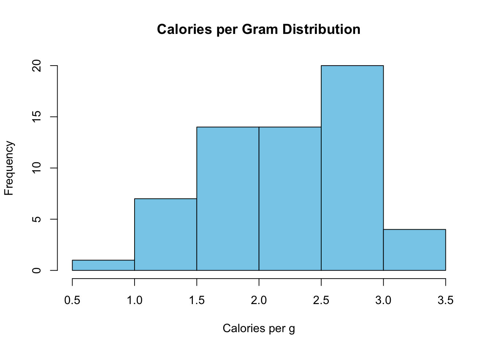
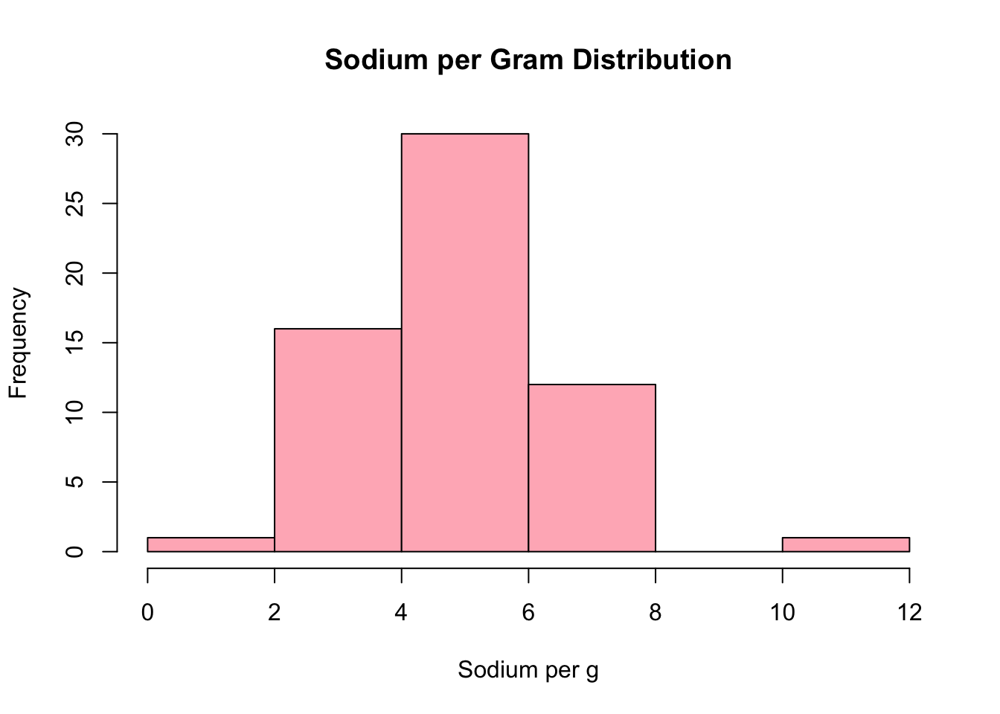
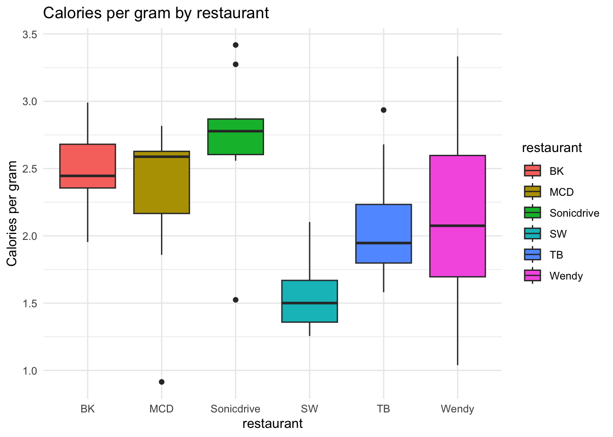
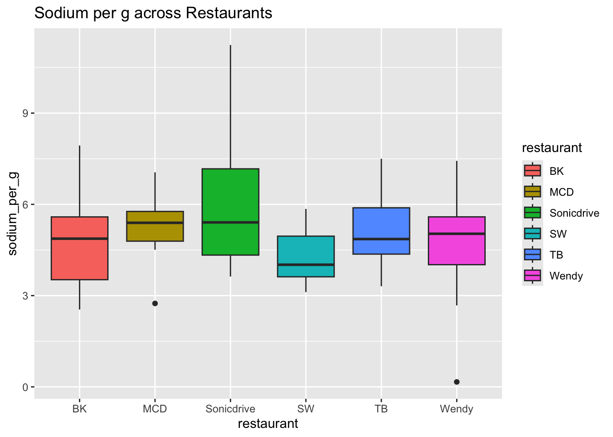
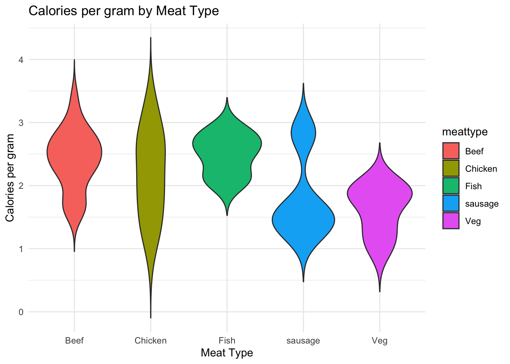
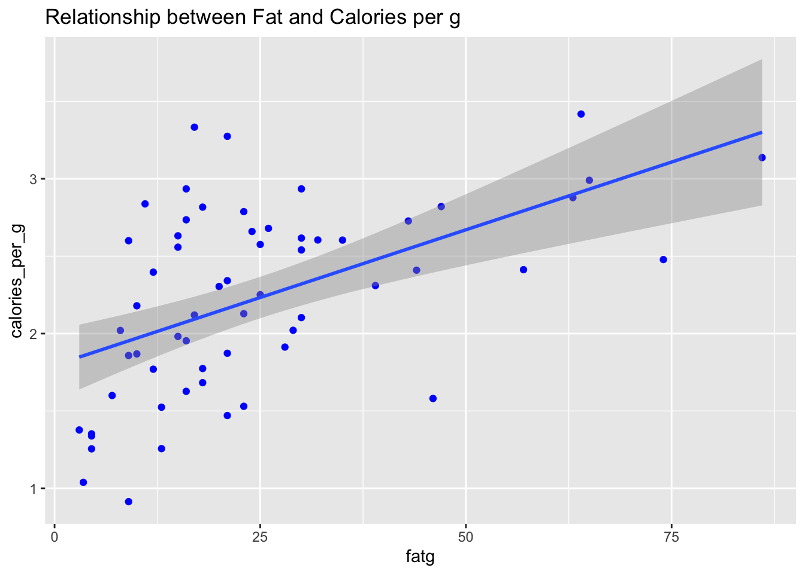

#Read the data and prepare data frame
fastfood <- read.csv2("fastfood.csv")
data.df<-data.frame(fastfood[1:60,1:7])#data frame(rectangular data structures)
# Calculate calories per gram and sodium per gram
data.df$calories_per_g <- data.df$caloriesKcal / data.df$servingsizeg
data.df$sodium_per_g <- data.df$sodiummg / data.df$servingsizegFastfood descriptive analysis
Background of the report
Fast food is a very popular option in some countries, bc of its fast and easy produce process, and the flavor is also a - We can make hidden nutritional differences more visible. it shows how marketing (“healthy choices”) matches reality. It helps answer: Is Subway really healthier than McDonald’s?
Purpose of the report
This target readers of this report are as following:
Consumers → people trying to eat healthier but still eating fast food.
Restaurants → to benchmark their menu vs competitors.
Policy makers / public health organizations → to inform campaigns on reducing sodium/calorie intake.
By the conclusion of this report we can give some specific conclusion for the fastfood consumers, restaurants and policy maker:
Consumers: make informed choices (e.g., choose grilled chicken instead of fried beef).
Restaurants: identify where they could reformulate products (lower sodium, offer smaller portions).
Public health authorities: design education campaigns (“Did you know one Taco Salad has more sodium than 3 burgers?”).
Variable and description
variables of interest
Calories: when people are having the fastfood, the biggest concern might be the calories of different meals and brands, so I choose the calories as my selected varaiable of interest. in this report we use
calories_per_g=kcalories/servesizegto represent Kcalories per gram in every product.sodium: sodium is also one of the most concern elements of the health and energy of food. and in this report we use
sodiuim_per_g=sodium/servesizegto represent the sodium in every gram of fast food product.
socioeconomic characteristics: Even though there are no direct socioeconomic variable in ‘fastfood’ dataset, but I choose to use restaurant brand and meat type as my related characteristics. as following reasons:
- Restaurants (brands): This data set includes some famous fast food restaurants in people, and these brands differ in target customer and different selling point and different products. for example some brands target for fast and affordable meals, but some brands target more on health-conscious customers.
Descriptive analysis
read csv data set and organize the data set, to objectively observe the calories and sodium, I add 2 new columns called”calories_per_g”, “sodium_per_g”
Overview analysis
we have collected the data from 6 different fastfood brands and 10 products each brand. these products are the best selling and classic products. In terms of calories per gram, different brands and products has very big range. The product with the lowest calories per gram is “premium Southwest Salad with Chicken (McD)” from MCD, this product has 360 kcal in total and 0.914kcal per gram. “Fritos Chili Pie(so)” is the product with the highest calories per gram, with 940 kcal in total and 3.418 kcal per gram.
The average kcal per gram of these products is 2.23kcal/gram. And average sodium per gram of the data set is 5.03 per gram.
Based on the histogram describing calories per gram distribution, most of the fast food products calories/gram fall between 2.5-3 kcal/gram, which falls into the medium energy density category, by comparison, healthy foods recommended in dietary guidelines are usually in the low energy density range (<1.5 kcal/g). So most of the fast food options are way higher than the healthy density range.
Based on the histogram describing sodium per gram distribution, most of the fast food products sodium/g ranges from 4-6 mg sodium/gram . based on the WHO&FDA guidelines, about 1 mg sodium per gram of food as a “healthy average target”. Our observation is 4–6 times higher than the recommended average dietary density.
library(ggplot2)
library(dplyr)
Attaching package: 'dplyr'The following objects are masked from 'package:stats':
filter, lagThe following objects are masked from 'package:base':
intersect, setdiff, setequal, union# Restaurant distribution
table(data.df$restaurant)
BK MCD Sonicdrive SW TB Wendy
10 10 10 10 10 10 # calories and sodium summary
summary(data.df$calories_per_g) Min. 1st Qu. Median Mean 3rd Qu. Max.
0.9143 1.7731 2.3073 2.2286 2.6646 3.4182 summary(data.df$sodium_per_g) Min. 1st Qu. Median Mean 3rd Qu. Max.
0.1623 3.8848 4.9735 5.0032 5.7675 11.2389 data.df %>%
arrange(calories_per_g) %>%
slice(c(1, n())) itemname restaurant meattype caloriesKcal
1 Premium Southwest Salad with Chicken (McD) MCD Chicken 320
2 Fritos Chili Pie (So) Sonicdrive Beef 940
fatg sodiummg servingsizeg calories_per_g sodium_per_g
1 9 960 350 0.9142857 2.742857
2 64 1540 275 3.4181818 5.600000# visualization for overview
hist(data.df$calories_per_g, main="Calories per Gram Distribution", xlab="Calories per g", col="skyblue")
hist(data.df$sodium_per_g, main="Sodium per Gram Distribution", xlab="Sodium per g", col="lightpink")
Compare across restaurants
combing the calories per gram and sodium per gram box plot we can find out that
SW has the lowest calories per gram(median 1.5) , but it is still higher than the low energy density range(<1.5 kcal/gram). and SW also with the relatively low sodium per gram.
Sonicdrive has highest calories per gram range (median around 2.8-3.0, some above 3.4), also among all brands highest sodium/ gram.
The chart shows the distribution of calories per gram for five meat types: Beef, Chicken, Fish, Sausage, Veg.
Fat is a contributing factor to calories per gram, because as fat increases. calories per gram also increase. The regression line shows a upward trend. Calories per gram depend strongly on fat content: Foods higher in fat tend to be more calorie dense. But it also effected by other elements for example protein, etc.
# Boxplot of calories by restaurant
ggplot(data.df, aes(x = restaurant, y = calories_per_g, fill = restaurant)) +
geom_boxplot() +
theme_minimal() +
labs(title = "Calories per gram by restaurant", x = "restaurant", y = "Calories per gram")
# Boxplot of sodium by restaurant
ggplot(data.df, aes(x=restaurant, y=sodium_per_g,fill=restaurant)) +
geom_boxplot() +
labs(title="Sodium per g across Restaurants")
# compare between the meat type
ggplot(data.df, aes(x = meattype, y = calories_per_g, fill = meattype)) +
geom_violin(trim = FALSE) +
theme_minimal() +
labs(title = "Calories per gram by Meat Type", x = "Meat Type", y = "Calories per gram")
#Relationship with fat or serving size
ggplot(data.df, aes(x=fatg, y=calories_per_g)) +
geom_point(color="blue") +
geom_smooth(method="lm") +
labs(title="Relationship between Fat and Calories per g")`geom_smooth()` using formula = 'y ~ x'
Conclusion
- From the histagram from the we can see that the average Kcalories/gram of these fastfood are actually 3-4 times higher than the recommended amount, and also the sodium / gram gives us the same conclusion. So fast food shouldn’t be considered as healthy daily diet option
- In terms of restaurants, SW is considered the healthiest choice considering both the calories/g and sodium/g, by comparison sonicdrive’s product with the highest calories and sodium per gram. If customers are looking for a healthy diet they should avoid sonicdrive.
- Chicken shows the widest variability in calorie density, likely due to differences in preparation (e.g., lean breast vs. fatty thighs or fried chicken).
Addenda :
Addendum 1
In this report I use computational tool R script to make my analysis about the dataset fastfood. Firstly I used some descriptive statistics such as minimum, mean and media to summarize the distribution of calories and sodium per gram across the fast food item and restaurants brands. Data visualization tools such as box plot and histograms are used to demonstrate the distribution and difference among restaurants.
Addendum 2
R script is showed in the quadro file as above.